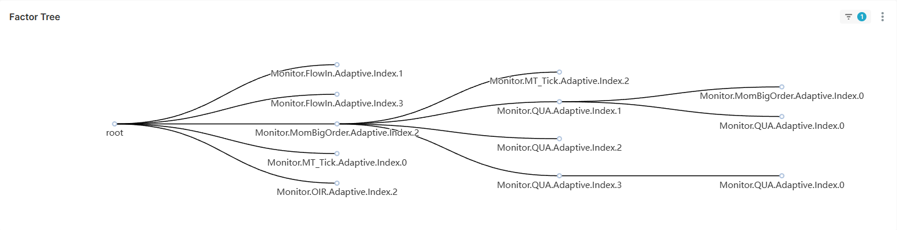

How to test multi factors
quark-fp/evaluation/selection.py can be used to test multi factors.
Manual selection of factors
Following script validates 2 factors together.
- Monitor.Aux.Adaptive.Index.0 of quark-fp/factor_pool/auxiliary.py
- Monitor.Intensity.Adaptive.Index.0 of quark-fp/factor_pool/sharpe.py
def evaluate():
start_date = datetime.date(2024, 1, 1)
end_date = datetime.date(2024, 2, 1)
cwd = pathlib.Path(__file__).parent
tree = FactorTree()
aux_node = FactorTree.get_node(
name='Monitor.Aux.Adaptive.Index.0',
file=str(pathlib.Path(cwd).parent.joinpath('factor_pool', 'auxiliary.py'))
)
tree.append(aux_node)
factor_node = FactorTree.get_node(
name='Monitor.Intensity.Adaptive.Index.0',
file=str(pathlib.Path(cwd).parent.joinpath('factor_pool', 'sharpe.py'))
)
tree.append(factor_node)
tree.evaluate(
override_config={'Datalore.Calibration.l1': 0.001,
'Datalore.Calibration.l2': 0.001},
resume=False,
start_date=start_date,
end_date=end_date,
dtype=['TradeData'],
validation_id=f'Simulation.{tree.digest()}',
pred_var=list(str(_) for _ in FutureTopic),
index_name='000016.SH',
pred_target='IH_MAIN',
strategy_mode=StrategyMode.sampling,
dev_pool=True,
override_cache=False
)
Note that some config can override config.ini using param override_config.
Auto selection of factors
Class FactorForest preforms brute-force factor selection, which finally generate best
FactorTrees base on metric_weight stored in {target_path}/factor_tree.csv.

def run_forest():
start_date = datetime.date(2024, 10, 8)
end_date = datetime.date(2024, 10, 18)
factor_dir = pathlib.Path(os.getcwd()).parent.joinpath('quark-fp', 'factor_pool')
base_pool = None
# base_pool = ['sharpe', 'mt_tick', 'oir', 'momentum_bigorder', 'qua', 'voi', 'flow_in']
metrics_weight = {'Acc_Confidence_AUC': 1}
ema_alpha = 0.5
n_nodes = 4
branch_per_node = lambda node: 6 - node
market = 'cn'
index_name = '000016.SH'
resume = True
override_config = None
override_config_all = {"Datalore.Calibration.pct_change_900.optimizer": 'Adam',
"Datalore.Calibration.state_3.optimizer": 'Adam',
"Datalore.Calibration.up_actual_3.optimizer": 'Adam',
"Datalore.Calibration.down_actual_3.optimizer": 'Adam',
"Datalore.Calibration.target_actual_3.optimizer": 'Adam',
"Datalore.Calibration.up_smoothed_3.optimizer": 'Adam',
"Datalore.Calibration.down_smoothed_3.optimizer": 'Adam',
"Datalore.Calibration.target_smoothed_3.optimizer": 'Adam'}
dtype = ['TradeData', 'TickData']
dev_pool = True
override_cache = False
target_path = end_date.strftime('%Y-%m-%d')
forest = FactorForest(n_nodes=n_nodes, branch_per_node=branch_per_node)
forest.run(
factor_dir=factor_dir,
base_pool=base_pool,
resume=resume,
override_config=override_config,
override_config_all=override_config_all,
start_date=start_date,
end_date=end_date,
metrics_weight=metrics_weight,
ema_alpha=ema_alpha, market=market,
dtype=dtype,
dev_pool=dev_pool,
override_cache=override_cache,
index_name=index_name,
target_path=target_path
)
factor_dir&base_poolare the factor path and files that determine scope of auto selection.metrics_weightis a weighted dict, based on which the overall metrics is calculated.ema_alphadefines how the overall metrics decay over time.n_nodes-1is the max depth of optimal FactorTree.branch_per_nodedefines how many FactorTree is retained in certain depth. In the demo, it will be 5 trees in depth1, 4 trees in depth2 and 3 trees in depth3.- Optimizer in
override_config_allshould be tuned toAdam, because Scipy and CVXPY optimizer may fail if dimension of X is too large.